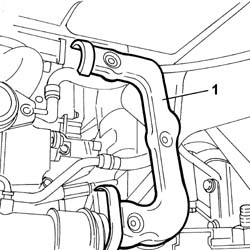
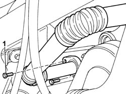
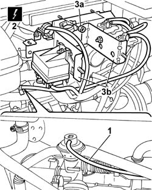
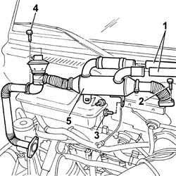

1080C82 E.G.R. - VALVE HEAT EXCHANGER ASSEMBLY - CONNECTOR PIPES - R.R.
- Path
- Procedures > 10 ENGINE UNIT > 1080 EXHAUST EMISSION CONTROL SYSTEM > 1080C EXHAUST GAS RECIRCULATION SYSTEM (E.G.R.) > 1080C82 E.G.R. - VALVE HEAT EXCHANGER ASSEMBLY - CONNECTOR PIPES - R.R.
- Kind
- repair procedure (removal / refitting; the operation number is the code)
- Applies to
- engines: 2.0 JTD 8V; all production periods
- Interactive page
- https://sloeber94.github.io/elrnDB-fDct/en/#/244000900
Applies to: engines: 2.0 JTD 8V; all production periods
 Removing
Removing
 Refitting
Refitting- Position the vehicle on the lift.
Op. 7055B54 UNDER-ENGINE GUARD - R R
1. Remove the heat shield for the EGR exhaust gas recirculation pipe to the exhaust manifold.

Applies to: engines: 2.0 JTD 8V; all production periods
1. Undo the bolts fixing the EGR exhaust gas recirculation pipe to the exhaust manifold.

Applies to: engines: 2.0 JTD 8V; all production periods
- Lower the vehicle.
See in Op. 1080C17
1. Disconnect the vacuum pipe from the EGR valve.
2. Disconnect the electrical connection for the heater plugs control unit.
 | Description | Connector |
|---|---|---|
2 | Heater plugs control unit | M015C |
3. Undo the fixing nuts (3a) and move the mounting bracket (3b) complete with solenoid valves and heater plugs control unit aside.

Applies to: engines: 2.0 JTD 8V; all production periods
1. Disconnect the two coolant pipes connected to the heat exchanger.
2. Undo the bolts fixing the exhaust gas recirculation pipe to the intake manifold.
3. Undo the bolts fixing the heat exchanger to the intake manifold.
4. Undo the bolts fixing the EGR valve to the intake manifold.
5. Remove the heat exchanger assembly, EGR valve and rigid pipe.

Applies to: engines: 2.0 JTD 8V; all production periods
Refitting
Removing- Fit the heat exchanger assembly, EGR valve and rigid pipe in the housing on the intake manifold.
- Tighten the bolts fixing the EGR valve to the intake manifold.
- Tighten the bolts fixing the heat exchanger to the intake manifold.
- Tighten the bolts fixing the exhaust gas recirculation pipe to the intake manifold.
- Connect the two coolant pipes connected to the heat exchanger.
- Fit the bracket complete with solenoid valves and heater plugs control unit.
- Tighten the fixing nuts.
- Connect the electrical connection for the heater plugs control unit.
| Description | Connector |
|---|---|---|
. | Heater plugs control unit | M015C |
- Connect the vacuum pipe to the EGR valve.
See in Op. 1080C17
- Tighten the bolts fixing the EGR exhaust gas recirculation pipe to the exhaust manifold.
- Fit the heat shield for the EGR exhaust gas recirculation pipe to the exhaust manifold.
Op. 7055B54 UNDER-ENGINE GUARD - R R
- Remove the vehicle from the lift.